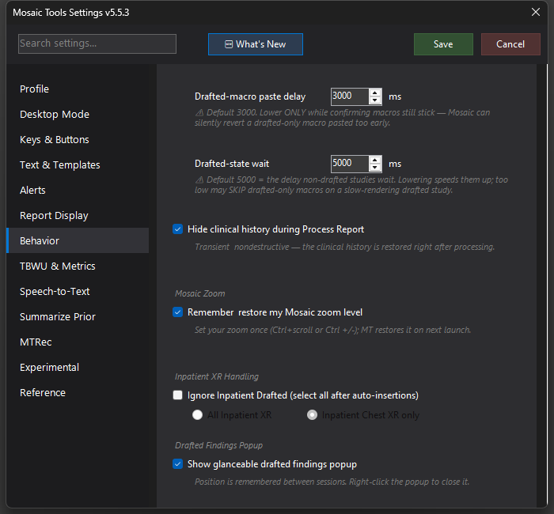

Mosaic Zoom Memory
Mosaic forgets your Ctrl+scroll text-size zoom on every launch; MosaicTools remembers it and re-applies it silently.

What it does
Mosaic loses your text-size zoom (the Ctrl+scroll / Ctrl +/- page zoom) every time it launches, so anyone who reads at anything other than 100% has been re-zooming daily. With this on, MosaicTools remembers the zoom level you set and re-applies it automatically the next time you're working in Mosaic.
How to turn it on / set it up
- Enable CDP if you haven't: Settings → Experimental → Mosaic CDP → Use CDP for Mosaic interaction (this feature requires it).
- Check Remember & restore my Mosaic zoom level in Settings → Behavior → Mosaic Zoom.
- Set your preferred zoom once in Mosaic with Ctrl+scroll or Ctrl +/-. Done.
Using it
Nothing to do day-to-day. When Mosaic launches fresh at the default zoom, MosaicTools applies your remembered level the moment Mosaic is focused. If you change the zoom during a shift, the new level becomes the remembered one.
Tips & gotchas
- The restore is deliberately unobtrusive: it applies silently while Mosaic is focused and never moves, resizes, or steals focus from your windows.
- This is the text-size page zoom inside Mosaic's report area, not your PACS/InteleViewer image zoom.
- If restore stops working, check the CDP status dashboard (Settings → Experimental → CDP Status) — the Mosaic dot should be green. CDP requires a Mosaic restart the first time it's enabled.